Capitolo 12 Teoria della Verosimiglianza
12.1 Il Modello Statistico
Un modello statistico è l’insieme di un modello probabilistico \(X_i\sim\mathscr{L}(\theta)\) e di un piano di campionamento dalla popolazione \(\mathscr{P}\). In queste pagine considereremo come unico piano di campionamento il campionamento casuale semplice con reintroduzione, ovvero assumeremo sempre le ipotesi IID. Per esempio sono un modello statistico:
- Le \(X_1,...,X_n\) sono IID, replicazioni di \(X\sim\text{Ber}(\pi)\), \(\pi\in[0,1]\) .
- Le \(X_1,...,X_n\) sono IID, replicazioni di \(X\sim\text{Pois}(\lambda)\), \(\lambda\in\mathbb{R}^+\).
- Le \(X_1,...,X_n\) sono IID, replicazioni di \(X\sim N(\mu,\sigma^2)\), \((\mu,\sigma^2)\in\mathbb{R}\times\mathbb{R}^+\).
- Le \(X_1,...,X_n\) sono IID, replicazioni di \(X\sim \mathscr{L}(\theta)\), \(\theta\in\Theta\)-
12.1.1 Esiste lo stimatore più efficiente?
Dipende dalle informazioni che abbiamo sulla Popolazione \(\mathscr{P}\) In contesti distribution free e ipotesi IID, senza alcuna ulteriore conoscenza della popolazione, non esistono procedure che possano essere dimostrate ottimali, il ricercatore valuta da caso a caso, previa un’attenta analisi descrittiva preliminare. In ipotesi distribution free l’intera distribuzione della variabile \(X\) è incognita. Se spostiamo l’attenzione all’inferenza da modello ipotizziamo di conoscere la forma della distribuzione di probabilità delle \(X\) a meno dei suoi parametri.
Sotto alcune condizioni di regolarità gli stimatori più efficienti sono gli stimatori di Massima Verosimiglianza. Lo stimatore di massima verosimiglianza parte dell’assunto che tutta l’informazione che un campione porge nella comprensione della popolazione risieda in una misura chiamata Verosimiglianza.
12.2 La Verosimiglianza
La Verosimiglianza è una misura di incertezza non sul risultato di un esperimento casuale, ma sui meccanismi che generano una sequenza casuale. Nella teoria della verosimiglianza si può parlare di probabilità solo per il campione, ma non per i meccanismi che lo hanno generato. Una volta osservati i dati la conoscenza di questi meccanismi diventa più o meno verosimile agli occhi del ricercatore alla luce dell’osservazione.
Nella teoria della verosimiglianza, dunque, si usano due termini diversi: probabilità per indicare la misura dell’incertezza sui risultati dell’estrazione del campione e verosimiglianza per indicare la misura di incertezza sui meccanismi che hanno prodotto il campione.
La teoria della verosimiglianza presuppone la totale ignoranza del ricercatore che esplora un sistema casuale di cui sta cercando di comprendere i parametri.
Se per esempio voglio conoscere la probabilità \(\pi\) di una moneta truccata di porgere Testa, la teoria della verosimiglianza presuppone che per me, prima di osservare il campione, tutti i possibili valori di \(\pi\) siano equamente verosimili, compresi quelli più estremi.
Questa totale ignoranza non è sempre giustificata e per allargare la teoria della verosimiglianza rimando il lettore su testi di statistica Bayesiana che sfruttano il teorema di Bayes per costruire una misura alternativa (più ampia) della verosimiglianza, basata solo sul concetto allargato di probabilità.
Donovan, T. M., and Mickey, R. M. (2019). Bayesian Statistics for Beginners: A Step-by-Step Approach. Oxford: Oxford University Press.
La funzione di verosimiglianza è la una funzione di probabilità dei dati, fissata sul campione osservato, in cui la variabile è il parametro. La verosimiglianza è indicata con la lettera \(L\) (Likelihood) e si scrive
\[ L(\theta;\text{Dati})\propto P(\text{Dati};\theta) \]
e si legge che la verosimiglianza \(L\) di \(\theta\) è proporzionale \(\propto\) alla probabilità di osservare i dati osservati nell’ipotesi che \(\theta\) sia vera. Il simbolo proporzionale \(\propto\) significa che: \[ L(\theta;\text{Dati})=Const.\cdot P(\text{Dati};\theta) \] dove \(Const.\) è una constante qualunque che non dipende da \(\theta\). Il valore di \(L(\theta;\text{Dati})\) per un \(\theta\) fissato, non ha alcune significato se non è confrontato con altri valori. Infatti \(L(\theta;\text{Dati})\) non è una probabilità, ma se \[ L(\theta_1;\text{Dati})> L(\theta_2;\text{Dati}) \] Significa che l’ipotesi che sia stato \(\theta=\theta_1\) il valore del parametro del modello che ha generato i dati è più verosimile dell’ipotesi che sia stato \(\theta=\theta_2\).
12.2.1 La Verosimiglianza attraverso un esempio
Supponiamo di avere un’urna che ha solo \(N=10\) bussolotti alcuni bianchi \(B\) e i rimanenti non bianchi \(\overline{B}=N-B\), ma non conosciamo \(B\). Il numero di bianchi \(B\) potrà essere \(0, 1,...,10\). La VC \(X\) che registra l’evento bianco o nero di una estrazione è chiaramente Bernoulli \(X\sim\text{Ber}(\pi)\) di parametro: \[\pi=\frac B {10}\] \(\pi\) è la proporzione di bussolotti bianchi nell’urna. In questo specifico esempio: \[\pi\in\left\{\frac 0{10}=0.0,\frac{1}{10}=0.1,...,\frac 9 {10}=0.9,\frac{10}{10}=1.0\right\}\] Lo spazio dei parametri ha dimensione 11. Uno stimatore ha il compito di scegliere uno di questi 11 valori.
Estraiamo \(n=5\) bussolotti CR (IID) e otteniamo \[x_1=0,x_2=1,x_3=1,x_4=0,x_5=1\]
Se conoscessi \(\pi\) attraverso il calcolo delle probabilità saprei calcolare la probabilità della sequenza (ordinata) 0,1,1,0,1 proveniente da 5 esperimenti di Bernoulli IID
\[\begin{multline*} P(X_1=0\cap X_2=1 \cap X_3=1 \cap X_4=0\cap X_5=1;\pi) = \\ \begin{array}{ll} = &P(X_1=0;\pi)P(X_2=1;\pi)P(X_3=1;\pi)P(X_4=0;\pi)P(X_5=1;\pi)\\ = &(1-\pi)\pi\pi(1-\pi)\pi\\ = &\pi^3(1-\pi)^{5-3} \end{array} \end{multline*}\]
La posso calcolare per ogni possibile valore di \(\pi\in\{0.0,0.1,...,1.0\}\).
12.2.2 Se \(\pi\) fosse…
A questo punto graduare decidere i valori di \(\pi\) tra più e meno verosimili alla luce dei dati \(\mathbf{x}=(0,1,1,0,1)\). Questo si fa sostituendo \(\pi\) con i suoi possibili valori e calcolando la ipotetica probabilità.
Se fosse \(\pi=\) 0 con quale probabilità avrei osservato la sequenza \(0,1,1,0,1\)? \[ 0 ^3\cdot(1- 0 )^2= 0 \qquad\text{l'ipotesi $\pi= 0 $ ha verosimiglianza proporzionale a 0 } \] Se fosse \(\pi=\) 0.1 con quale probabilità avrei osservato la sequenza \(0,1,1,0,1\)? \[ 0.1 ^3\cdot(1- 0.1 )^2= 0.00081 \qquad\text{l'ipotesi $\pi= 0.1 $ ha verosimiglianza proporzionale a 0.00081 } \] Se fosse \(\pi=\) 0.2 con quale probabilità avrei osservato la sequenza \(0,1,1,0,1\)? \[ 0.2 ^3\cdot(1- 0.2 )^2= 0.00512 \qquad\text{l'ipotesi $\pi= 0.2 $ ha verosimiglianza proporzionale a 0.00512 } \] Se fosse \(\pi=\) 0.3 con quale probabilità avrei osservato la sequenza \(0,1,1,0,1\)? \[ 0.3 ^3\cdot(1- 0.3 )^2= 0.01323 \qquad\text{l'ipotesi $\pi= 0.3 $ ha verosimiglianza proporzionale a 0.01323 } \] Se fosse \(\pi=\) 0.4 con quale probabilità avrei osservato la sequenza \(0,1,1,0,1\)? \[ 0.4 ^3\cdot(1- 0.4 )^2= 0.02304 \qquad\text{l'ipotesi $\pi= 0.4 $ ha verosimiglianza proporzionale a 0.02304 } \] Se fosse \(\pi=\) 0.5 con quale probabilità avrei osservato la sequenza \(0,1,1,0,1\)? \[ 0.5 ^3\cdot(1- 0.5 )^2= 0.03125 \qquad\text{l'ipotesi $\pi= 0.5 $ ha verosimiglianza proporzionale a 0.03125 } \] Se fosse \(\pi=\) 0.6 con quale probabilità avrei osservato la sequenza \(0,1,1,0,1\)? \[ 0.6 ^3\cdot(1- 0.6 )^2= 0.03456 \qquad\text{l'ipotesi $\pi= 0.6 $ ha verosimiglianza proporzionale a 0.03456 } \] Se fosse \(\pi=\) 0.7 con quale probabilità avrei osservato la sequenza \(0,1,1,0,1\)? \[ 0.7 ^3\cdot(1- 0.7 )^2= 0.03087 \qquad\text{l'ipotesi $\pi= 0.7 $ ha verosimiglianza proporzionale a 0.03087 } \] Se fosse \(\pi=\) 0.8 con quale probabilità avrei osservato la sequenza \(0,1,1,0,1\)? \[ 0.8 ^3\cdot(1- 0.8 )^2= 0.02048 \qquad\text{l'ipotesi $\pi= 0.8 $ ha verosimiglianza proporzionale a 0.02048 } \] Se fosse \(\pi=\) 0.9 con quale probabilità avrei osservato la sequenza \(0,1,1,0,1\)? \[ 0.9 ^3\cdot(1- 0.9 )^2= 0.00729 \qquad\text{l'ipotesi $\pi= 0.9 $ ha verosimiglianza proporzionale a 0.00729 } \] Se fosse \(\pi=\) 1 con quale probabilità avrei osservato la sequenza \(0,1,1,0,1\)? \[ 1 ^3\cdot(1- 1 )^2= 0 \qquad\text{l'ipotesi $\pi= 1 $ ha verosimiglianza proporzionale a 0 } \]
Definiamo la funzione di verosimiglianza (Likelihood), la funzione \(L\) del parametro incognito \(\pi\) alla luce dei dati \(X_1=0,X_2=1,X_3=1,X_4=1,X_5=1\) osservati: \[\begin{multline*} L(\pi;X_1=0,X_2=1,X_3=1,X_4=1,X_5=1) = \\ \begin{array}{ll} = &L(\pi)\\ = &K\cdot P(X_1=0\cap X_2=1\cap X_3=1\cap X_4=1\cap X_5=1;\pi) \qquad \text{con $K> 0$}\\ \propto & P(X_1=0\cap X_2=1\cap X_3=1\cap X_4=1\cap X_5=1;\pi)\\ \propto & \pi^3(1-\pi)^2 \end{array} \end{multline*}\] La verosimiglianza gradua quanto un certo valore di \(\pi\) è compatibile con i dati osservati. Per esempio l’ipotesi \(\pi=0.5\) è più verosimile dell’ipotesi \(\pi=0.4\), alla luce dei dati \(x_1=0,x_2=1,x_3=1,x_4=0,x_5=1\), \[ L(0.5)=0.0312>L(0.4)=0.023 \] Se mettiamo \(\pi\) in ascissa e \(L(\pi)\) in ordinata, otteniamo il grafico della verosimiglianza di \(\pi\), alla luce dei dati osservati.
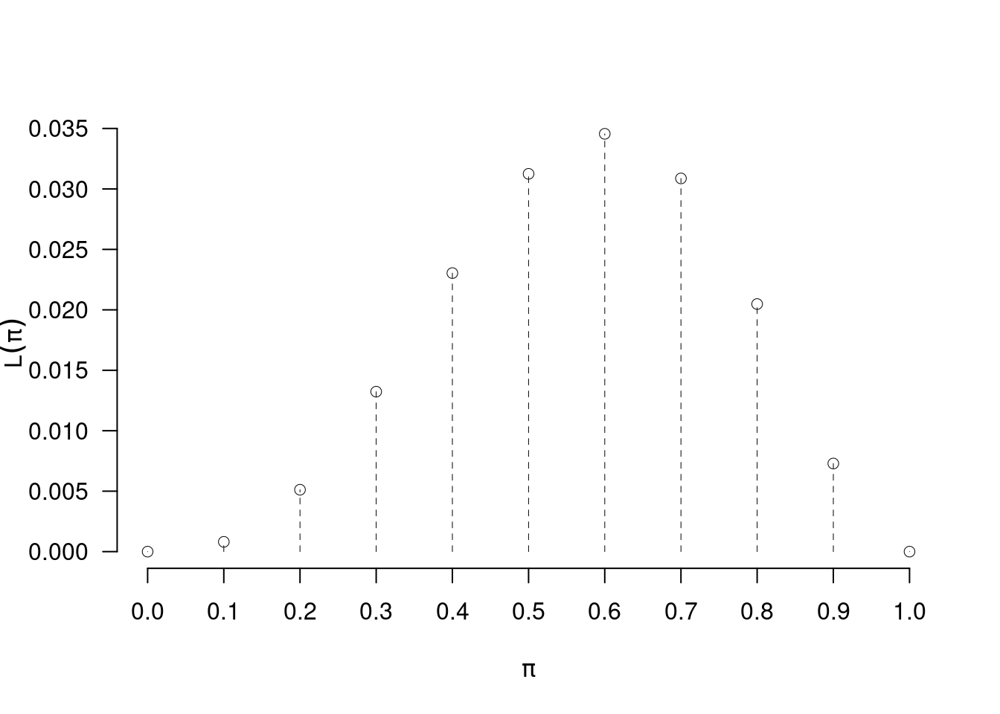
12.2.3 La verosimiglianza non è una probabilità
Notiamo che \[\sum_{\pi\in\{0.0,0.1,...,1.0\}}L(\pi) = 0+0.0008+...+0=0.1666\neq 1\]
La possiamo moltiplicare per un numero qualunque
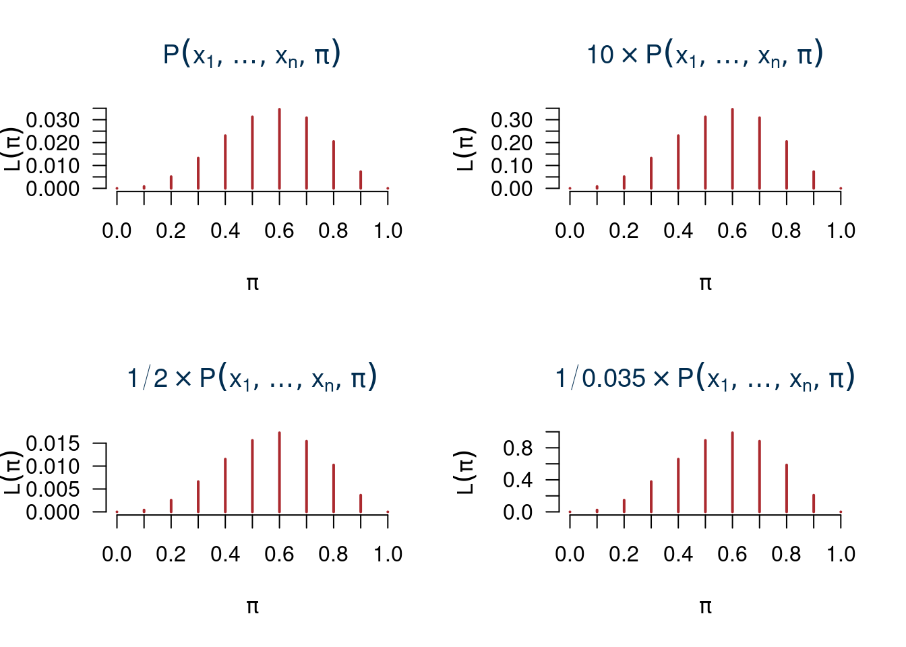
12.2.4 La stima di massima verosimiglianza
\(\hat\pi_{ML}=\hat\pi\) è \[\hat\pi\in\{0.0,0.1,0.2,...,1.0\}: L(\hat\pi)>L(\pi),\forall\pi\neq\hat\pi\]
E quindi: \[\hat\pi=0.6=\frac 3 5\]
Consideriamo \(\ell\), il logaritmo di \(L\) \[\ell(\pi)=\log L(\pi)\]
| \(\pi=\) | 0 | 0.1000 | 0.2000 | 0.3000 | 0.400 | 0.5000 | 0.6000 | 0.7000 | 0.8000 | 0.9000 | 1 |
| \(L(\pi)\) | 0 | 0.0008 | 0.0051 | 0.0132 | 0.023 | 0.0312 | 0.0346 | 0.0309 | 0.0205 | 0.0073 | 0 |
| \(\ell(\pi)\) | -Inf | -7.1185 | -5.2746 | -4.3253 | -3.771 | -3.4657 | -3.3651 | -3.4780 | -3.8883 | -4.9213 | -Inf |
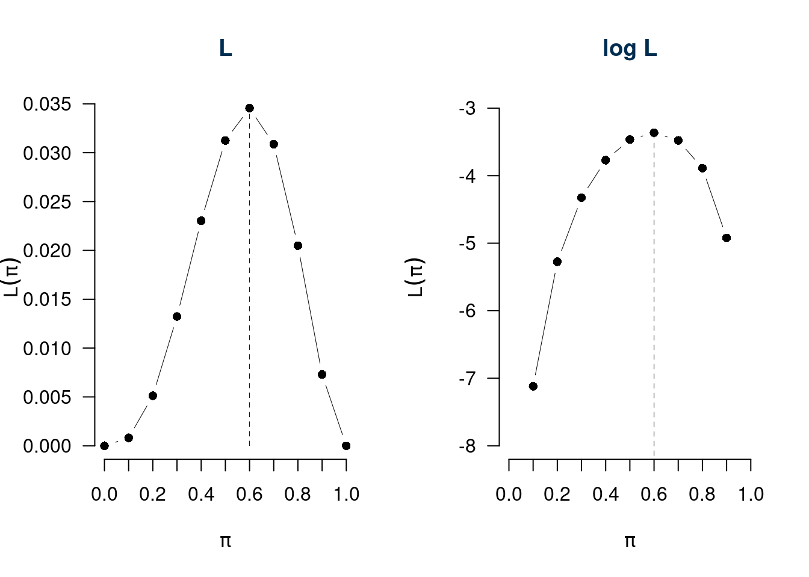
12.2.5 Esempio IID da popolazione finita (parte due)
Riprendiamo l’esempio di prima: un’urna che ha solo \(N=10\) bussolotti alcuni bianchi \(B\) altri neri \(N\), ma non conosciamo \(B\) ed \(N\). Il numero di bianchi \(B\) potrà essere \(0, 1,...,10\) e \(\pi\) è la proporzione di bussolotti bianchi nell’urna \[\pi=\frac B{10}\]
Estraiamo \(n=5\) bussolotti CR (IID) e otteniamo 3 successi (bussolotto bianco) e 2 insuccessi (bussolotto nero). Non conosciamo l’ordine.
\(X\sim\text{Binom}(5,\pi)\), il mio campione è un’estrazione dalla binomiale con \(n=5\). Speculiamo su \(\pi\)
Se conoscessi \(\pi\) attraverso il calcolo delle probabilità saprei calcolare la probabilità \(P(X)=3\), con \(X\sim\text{Binom}(5,\pi)\) \[ P(X=3;\pi) = \binom{5}{3}\pi^3(1-\pi)^{5-3} =10\cdot \pi^3(1-\pi)^2 \]
Se fosse \(\pi=0\) (\(B=0\)) con quale probabilità avrei osservato la sequenza \(X=3\)? \[\binom{5}{3}0^3\cdot(1-0)^2=0\] - l’ipotesi \(\pi=0\) ha verosimiglianza proporzionale a zero
Se fosse \(\pi=0.1\) (\(B=1\)) con quale probabilità avrei osservato la sequenza \(X=3\)? \[\binom{5}{3}0.1^3\cdot(1-0.1)^2=0.0081\] - l’ipotesi \(\pi=0.1\) ha verosimiglianza proporzionale a 0.0081
…
Definiamo la funzione di verosimiglianza (Likelihood), la funzione \(L\) del parametro incognito \(\pi\) alla luce dei dati \(x=3\) osservati: \[\begin{eqnarray*} L(\pi;x=3) &=& L(\pi) \\ &\propto& P(x=3;\pi)\\ &=& \binom{5}{3}\pi^3(1-\pi)^2\\ &\propto& \pi^3(1-\pi)^2 \end{eqnarray*}\]
La tabella
| \(\pi=\) | 0 | 0.1000 | 0.2000 | 0.3000 | 0.400 | 0.5000 | 0.6000 | 0.7000 | 0.8000 | 0.9000 | 1 |
| \(L(\pi)\) | 0 | 0.0008 | 0.0051 | 0.0132 | 0.023 | 0.0312 | 0.0346 | 0.0309 | 0.0205 | 0.0073 | 0 |
| \(\log(L(\pi))\) | -Inf | -7.1185 | -5.2746 | -4.3253 | -3.771 | -3.4657 | -3.3651 | -3.4780 | -3.8883 | -4.9213 | -Inf |
e il grafico

12.2.6 Abbiamo trovato il vero \(\pi\)?
Ovviamente \(\hat\pi\) non è \(\pi\) che non conosceremo mai, \(\hat\pi=0.6\) è il valore più verosimile tra tutti i possibili valori di \(\pi\), ma non è \(\pi\). Ci possiamo chiedere se, per esempio, l’ipotesi \(\pi=0.5\) è “impossibile”. Anche in questo caso la risposta è negativa, \(\pi=0.5\) è solo, alla luce dei dati, meno verosimile dell’ipotesi \(\pi=0.6\). E possiamo anche calcolare di di quanto: \[\frac{L(\hat\pi=0.6)}{L(\pi=0.5)}=\frac{0.3456}{0.3125}=1.1059\]
Alla luce dei dati (3 successi su 5 estrazioni) il valore \(\hat\pi=0.6\) è il \(10.592\%\) più verosimile di \(\pi=0.5\). \[ (1.1059-1)\times 100 \%= 10.592\% \]
12.2.7 Muoviamo anche \(S_n\)
 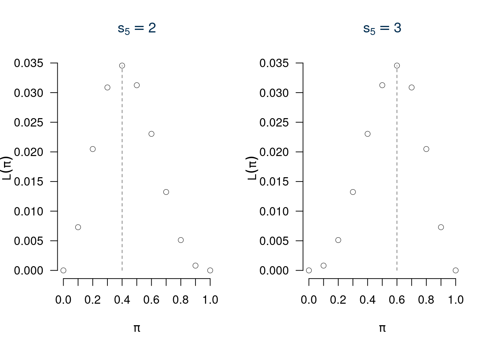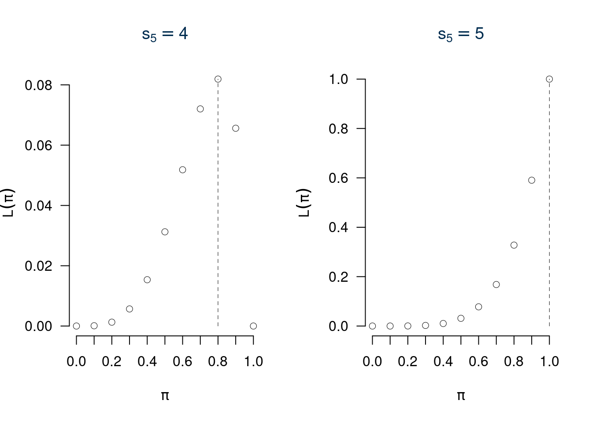
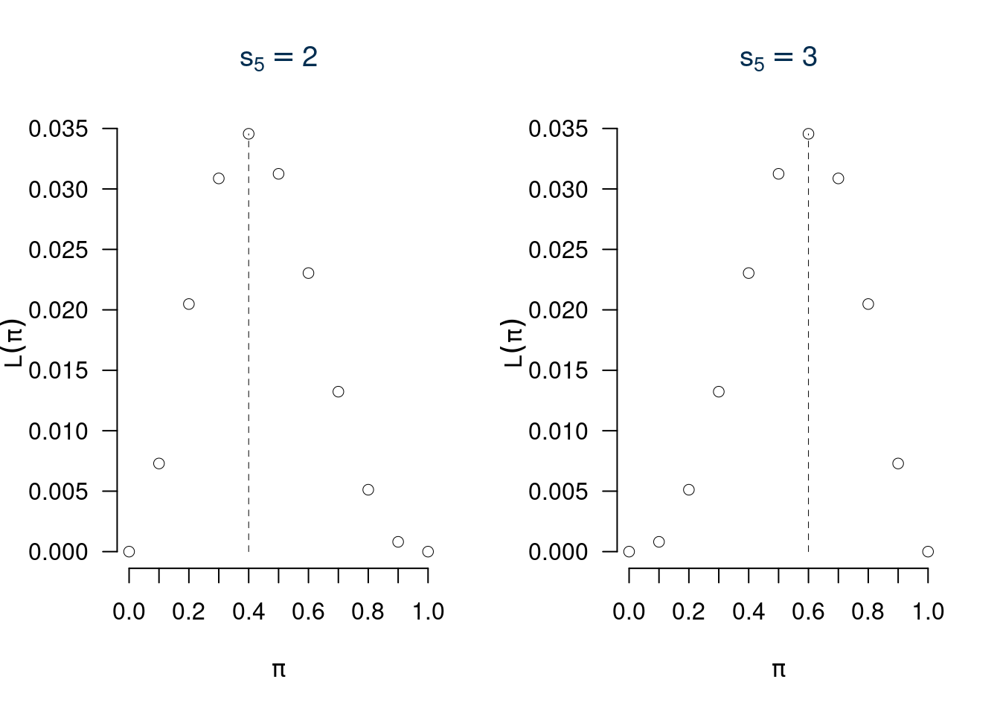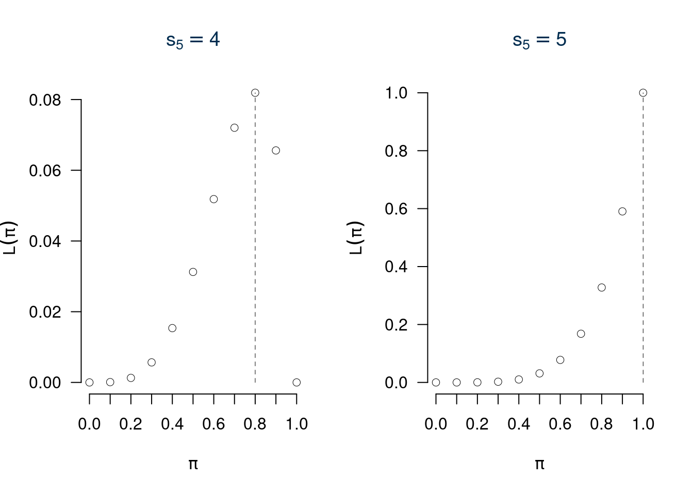
In sintesi, lo spazio \(X\times\Theta\) è l’incrocio tra tutti i possibili \(\pi\) e tutti i possibili \(s_n\), ne esce una matrice con 10 righe e 10 colonne dove le righe rappresentano \(s_n\) e le colonne \(\pi\).
| \(s_{5}=0\) | \(s_{5}=1\) | \(s_{5}=2\) | \(s_{5}=3\) | \(s_{5}=4\) | \(s_{5}=5\) | |
|---|---|---|---|---|---|---|
| \(\pi=0\) | 1.0000 | 0.0000 | 0.0000 | 0.0000 | 0.0000 | 0.0000 |
| \(\pi=0.1\) | 0.5905 | 0.3280 | 0.0729 | 0.0081 | 0.0005 | 0.0000 |
| \(\pi=0.2\) | 0.3277 | 0.4096 | 0.2048 | 0.0512 | 0.0064 | 0.0003 |
| \(\pi=0.3\) | 0.1681 | 0.3601 | 0.3087 | 0.1323 | 0.0284 | 0.0024 |
| \(\pi=0.4\) | 0.0778 | 0.2592 | 0.3456 | 0.2304 | 0.0768 | 0.0102 |
| \(\pi=0.5\) | 0.0312 | 0.1562 | 0.3125 | 0.3125 | 0.1562 | 0.0312 |
| \(\pi=0.6\) | 0.0102 | 0.0768 | 0.2304 | 0.3456 | 0.2592 | 0.0778 |
| \(\pi=0.7\) | 0.0024 | 0.0284 | 0.1323 | 0.3087 | 0.3601 | 0.1681 |
| \(\pi=0.8\) | 0.0003 | 0.0064 | 0.0512 | 0.2048 | 0.4096 | 0.3277 |
| \(\pi=0.9\) | 0.0000 | 0.0004 | 0.0081 | 0.0729 | 0.3280 | 0.5905 |
| \(\pi=1\) | 0.0000 | 0.0000 | 0.0000 | 0.0000 | 0.0000 | 1.0000 |
questa tabella, letta per righe ci indica la probabilità, letta per colonne ci indica la verosimiglianza.
12.3 La Funzione di Verosimiglianza
Definizione 12.1 (Funzione di Verosimiglianza) Siano \(x_1,...,x_n\) \(n\) osservazioni di \(X\sim \mathscr{L}(\theta)\), \(\theta\in\Theta\), si definisce la verosimiglianza \(L\) di \(\theta\) la funzione: \[L(\theta;x_1,...,x_n)=L(\theta)\propto P(X_1=x_1,...,X_n=x_n;\theta)\]
La funzione di verosimiglianza è una funzione in \(\theta\) (la variabile) per \(x_1,...,x_n\) fissi. Indica quanto un particolare valore di \(\theta\) è supportato dai dati. Più alta è la verosimiglianza più i valori di \(\theta\) che la rendono alta sono supportati dall’evidenza campionaria. Se \(x_1,..,x_n\) sono osservazioni \(IID\) otteniamo \[\begin{eqnarray*} L(\theta) &\propto& P(X_1=x_1;\theta)\cdot...\cdot P(X_n=x_n;\theta) \\ &\propto& f(x_1;\theta)\cdot...\cdot f(x_n;\theta)\\ &\propto& \prod_{i=1}^n f(x_i;\theta) \end{eqnarray*}\]
Definizione 12.2 (Log Verosimiglianza) Si definisce la log-verosimiglianza \(\ell\): \[\begin{eqnarray*} \ell(\theta) &=& \log L(\theta) \\ &=& \log \prod_{i=1}^n f(x_i;\theta)\\ &=& \sum_{i=1}^n \log f(x_i;\theta) \end{eqnarray*}\]
12.4 La Stimatore di massima Verosimiglianza
Definizione 12.3 (Stimatore du Massima Verosimiglianza) Lo stimatore di massima verosimiglianza per \(\theta\) è \[\begin{eqnarray*} \hat\theta &=& \operatorname*{\text{argmax}}_{\theta\in\Theta} L(\theta)\\ &=& \operatorname*{\text{argmax}}_{\theta\in\Theta} \ell(\theta) \end{eqnarray*}\]
\[\hat\theta:L(\hat\theta)>L(\theta), \forall\theta\neq\hat\theta, \qquad\ell(\hat\theta)>\ell(\theta), \forall\theta\neq\hat\theta\]
12.5 Il Principio di Verosimiglianza
Secondo la teoria della verosimiglianza, dato un modello statistico tutta l’informazione che un campione \(\mathbf{x}=(x_1,...,x_n)\) porge a \(\theta\) è contenuta nella sua funzione di verosimiglianza.
12.7 Caso Bernoulli urna infinita.
Se l’urna è infinita \(N\to\infty\), allora \(\pi\in[0,1]\). Le variabili \(X_1,...,X_n\) tutte replicazioni IID di \(X\sim \text{Ber}(\pi)\), si realizzano in \(x_1,...,x_n\).
Esempio. \(n=5\), \(x_1=0,x_2=1,x_3=1,x_4=0,x_5=1\), La probabilità della singola estrazione è \[P(X_i=x_i;\pi)=f(x_i;\pi)=\pi^{x_i}(1-\pi)^{1-x_i}\]
La verosimiglianza è \[\begin{eqnarray*} L(\pi) &\propto& \prod_{i=1}^n f(x_i;\pi)\\ &=& \prod_{i=1}^n \pi^{x_i}(1-\pi)^{1-x_i}\\ &=& \pi^{x_1}(1-\pi)^{1-x_1} \pi^{x_2}(1-\pi)^{1-x_2} ... \pi^{x_n}(1-\pi)^{1-x_n}\\ &=& \pi^{x_1}\pi^{x_2}...\pi^{x_n}\quad (1-\pi)^{1-x_1}(1-\pi)^{1-x_2}...(1-\pi)^{1-x_n}\\ &=& \pi^{x_1+x_2+...+x_n}(1-\pi)^{1-x_1+1-x_2+...+1-x_n}\\ &=& \pi^{\sum_{i=1}^n x_i}(1-\pi)^{n-\sum_{i=1}^n x_i}\\ &=& \pi^{s_n}(1-\pi)^{n-s_n}, \qquad s_n=\sum_{i=1}^n x_i \end{eqnarray*}\]
La statistica \(s_n\) contiene tutta l’informazione del campione \(x_1,...,x_n\). La log-verosimiglianza è \[\begin{eqnarray*} \ell(\pi) &=& \log L(\pi)\\ &=& \log \pi^{s_n}(1-\pi)^{n-s_n}\\ &=& \log \pi^{s_n} + \log (1-\pi)^{n-s_n}\\ &=& s_n \log \pi + (n-s_n) \log (1-\pi) \end{eqnarray*}\]
Per derivare il \(\pi\) che rende massima la verosimiglianza si deve derivare la funzione \(\ell\) ed uguagliare a zero la derivata prima: \[\ell'(\pi)= \frac{s_n}{\pi}+(-1)\frac{n-s_n}{1-\pi}=\frac{s_n}{\pi}-\frac{n-s_n}{1-\pi}\]
\(\hat\pi\) è dunque quel valore tale che \[\ell'(\hat\pi)=0\]
Eguagliamo a zero la derivata prima della log verosimiglianza: \[\begin{eqnarray*} \ell'(\pi) &=& 0 \\ \frac{s_n}{\pi}-\frac{n-s_n}{1-\pi} &=& 0 \\ \frac{s_n(1-\pi)-(n-s_n)\pi}{\pi(1-\pi)} &=& 0\qquad \text{il denominatore è ininfluente} \\ s_n - s_n \pi - n \pi + s_n \pi &=& 0 \\ s_n- n \pi &=& 0\\ n\pi &=& s_n \\ \hat\pi &=& \frac{s_n}n\\ &=& \frac{\sum_{i=1}^n x_i}n \end{eqnarray*}\]
Se \(n=5\), \(s_5=3\) allora: \[\hat\pi=\frac{3}{5}=0.6\]
\(L(\pi;s_5=3)\), \(\ell(\pi;s_5=3)\).
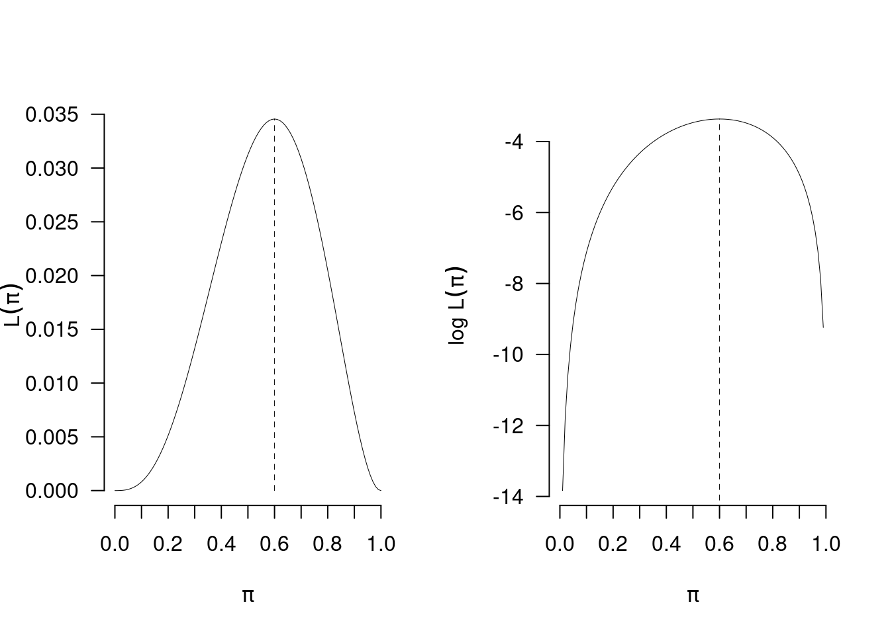
12.7.1 Calcolo delle proprietà di \(\hat\pi\)
Dunque
Siano \(X_1,...X_n\) \(n\) VC IID, tali che \(X_i\sim\text{Ber}(\pi)\) lo stimatore di massima verosimiglianza per \(\pi\) è \[\hat \pi=\frac 1n \sum_{i=1}^nX_i\]
Il vero valore di \(\pi\) è incognito ma sappiamo che:
\(\hat\pi\) è corretto per \(\pi\), infatti \[E(\hat\pi)=E\left(\frac{1}n\sum_{i=1}^n X_i\right)=\frac{1}n\sum_{i=1}^nE(X_i)=\frac{\pi+...+\pi}{n}=\frac n n\pi=\pi\]
E quindi \[MSE(\hat\pi)=V(\hat\pi)=\frac{\pi(1-\pi)}{n}\] che è ancora funzione di \(\pi\).
Lo stimatore \(\hat\pi\) per \(\pi\) è consistente, infatti \[\lim_{n\to +\infty}MSE(\hat\pi)=\lim_{n\to +\infty}\frac{\pi(1-\pi)}{n}=0\]
\(\hat\pi\) è corretto e consistente per \(\pi\).
Osserviamo che:
\[SE(\hat\pi)=\sqrt{\frac{\pi(1-\pi)}{n}}\]
È un risultato teorico che dipende dal vero \(\pi\), che non conosciamo.
L’errore di stima si stima sostituendo a \(\pi\) la sua stima \(\hat\pi\) \[\widehat{SE(\hat\pi)}=\sqrt{\frac{\hat\pi(1-\hat\pi)}{n}}\]
Se \(\hat\pi=0.6\) e \(n=5\) \[\widehat{SE(\hat\pi)}=\sqrt{\frac{0.6(1-0.6)}{5}}=0.2191\]
Lo Standard Error è l’ordine di grandezza dell’errore commesso.
12.7.2 Se \(n\) aumenta e \(\hat\pi=0.6\)
Se \(n=10\) e \(s_{10}=6\), allora anche in questo caso \[\hat\pi=\frac 6{10}=0.6\]
ma \[\widehat{SE(\hat\pi)}=\sqrt{\frac{0.6(1-0.6)}{10}}=0.1549.\]
Se \(n=20\) e \(s_{10}=12\), allora anche in questo caso \[\hat\pi=\frac {12}{20}=0.6\]
e \[\widehat{SE(\hat\pi)}=\sqrt{\frac{0.6(1-0.6)}{20}}=0.1095.\]
Se \(n=100\) e \(s_{100}=60\), allora anche in questo caso \[\hat\pi=\frac {60}{100}=0.6\]
e \[\widehat{SE(\hat\pi)}=\sqrt{\frac{0.6(1-0.6)}{100}}=0.049.\]
Se \(n=1000\) e \(s_{10}=600\), allora anche in questo caso \[\hat\pi=\frac {600}{1~000}=0.6\]
e \[\widehat{SE(\hat\pi)}=\sqrt{\frac{0.6(1-0.6)}{1000}}=0.0155.\]
Osserviamo nel grafico \(L(\pi;s_n=0.6\cdot n)\) e \(\ell(\pi;s_n=0.6\cdot n)\) per \(n=5,10,20,100,1~000\)
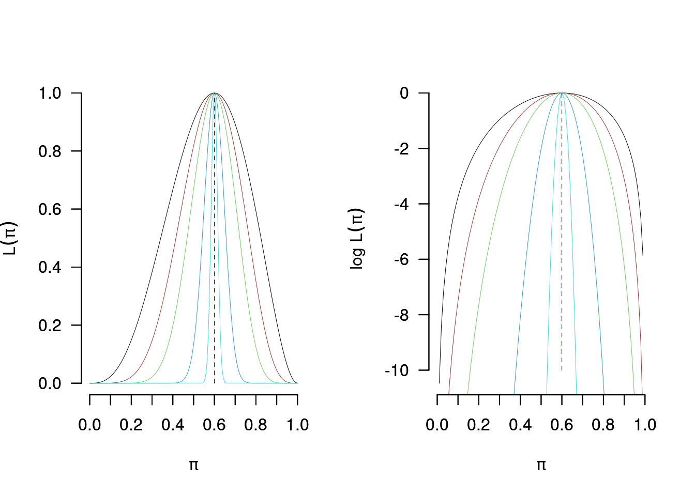
12.7.3 L’ipotesi \(\pi=0.5\)
Se \(n=5\), \(s_n=3\) il valore \(\hat\pi=0.6\) è il \(10.592\%\) più verosimile di \(\pi=0.5\). \[\frac{L(0.6;s_5=3)}{L(0.5;s_5=3)}=\frac{0.6^{3}(1-0.6)^{2}}{0.5^{3}(1-0.5)^{2}}=1.1059\]
Se \(n=10\), \(s_n=6\) il valore \(\hat\pi=0.6\) è il \(22.3059\%\) più verosimile di \(\pi=0.5\). \[\frac{L(0.6;s_5=3)}{L(0.5;s_5=3)}=\frac{0.6^{6}(1-0.6)^{4}}{0.5^{6}(1-0.5)^{4}}=1.2231\]
Se \(n=20\), \(s_n=12\) il valore \(\hat\pi=0.6\) è il \(49.5873\%\) più verosimile di \(\pi=0.5\). \[\frac{L(0.6;s_5=3)}{L(0.5;s_5=3)}=\frac{0.6^{12}(1-0.6)^{8}}{0.5^{12}(1-0.5)^{8}}=1.4959\]
Se \(n=100\), \(s_n=60\) il valore \(\hat\pi=0.6\) è il \(648.9869\%\) più verosimile di \(\pi=0.5\). \[\frac{L(0.6;s_5=3)}{L(0.5;s_5=3)}=\frac{0.6^{60}(1-0.6)^{40}}{0.5^{60}(1-0.5)^{40}}=7.4899\]
Se \(n=1000\), \(s_n=600\) il valore \(\hat\pi=0.6\) è il \(55557465413.0872\%\) più verosimile di \(\pi=0.5\). \[\frac{L(0.6;s_5=3)}{L(0.5;s_5=3)}=\frac{0.6^{600}(1-0.6)^{400}}{0.5^{600}(1-0.5)^{400}}=555574655.1309\]
12.8 Il modello Poisson
Siano \(X_1,...,X_n\) \(n\) VC IID, replicazioni della stessa \(X\sim\text{Pois}(\lambda)\), e dunque con funzione di probabilità: \[f(x_i;\lambda)=\frac{\lambda^{x_i}}{x_i!}e^{-\lambda}\]
La verosimiglianza per \(\lambda\) è \[\begin{eqnarray*} L(\lambda) &=& \prod_{i=1}^n\frac{\lambda^{x_i}}{x_i!}e^{-\lambda}\\ &=& \frac{\lambda^{x_1}}{x_1!}e^{-\lambda}\cdot \frac{\lambda^{x_2}}{x_2!}e^{-\lambda}\cdot ...\cdot \frac{\lambda^{x_n}}{x_n!}e^{-\lambda}\\ &=& \frac{1}{x_1!x_2!...x_n!} ~ \lambda^{x_1}\lambda^{x_2}...\lambda^{x_n} ~ e^{-\lambda}e^{-\lambda}...e^{-\lambda}\\ &=& \frac{1}{\prod_{i=1}^n x_i!} \lambda^{x_1+...+x_n} e^{-\lambda-...-\lambda}\\ &\propto& \lambda^{\sum_{i=1}^n x_i} e^{-n\lambda}\\ &\propto& \lambda^{s_n} e^{-n\lambda},\qquad s_n=\sum_{i=1}^n x_i \end{eqnarray*}\]
Tutta l’informazione sulla Poisson è contenuta nella statistica \(s_n\).
12.8.1 La log-verosimiglianza della Poisson
Essendo \[L(\lambda)\propto \lambda^{s_n} e^{-n\lambda}\]
Allora \[\begin{eqnarray*} \ell(\lambda) &=& \log \lambda^{s_n} e^{-n\lambda} \\ &=& \log \lambda^{s_n} + \log e^{-n\lambda} \\ &=& s_n\log\lambda - n\lambda,\qquad \text{in quanto } \log e^a = a \end{eqnarray*}\]
12.8.2 La stima di massima verosimiglianza della Poisson
Essendo \[\ell(\lambda)=s_n\log\lambda - n\lambda\]
Allora \[ \ell'(\lambda) = \frac {s_n}\lambda-n \]
E dunque \[\begin{eqnarray*} \ell'(\lambda) &=& 0\\ \frac {s_n}\lambda-n &=& 0\\ \frac {s_n}\lambda &=& n\\ n\lambda &=& s_n\\ \hat\lambda &=& \frac{s_n}n\\ \hat\lambda &=& \frac{1}n\sum_{i=1}^n x_i \end{eqnarray*}\]
12.8.3 Proprietà dello stimatore di massima verosimiglianza della Poisson \(\hat\lambda\)
Dunque
Siano \(X_1,...X_n\) \(n\) VC IID, tali che \(X_i\sim\text{Pois}(\lambda)\) lo stimatore di massima verosimiglianza per \(\pi\) è \[\hat \lambda=\frac 1n \sum_{i=1}^nX_i\]
Correttezza: \[ E(\hat\lambda) = E\left(\frac{1}n\sum_{i=1}^n X_i\right) = \frac 1 n \sum_{i=1}^n E(X_i) = \frac 1 n \sum_{i=1}^n \lambda = \lambda \]
Mean Squared Error: \[ MSE(\hat\lambda) = V(\hat\lambda) = V\left(\frac 1 n \sum_{i=1}^n X_i\right) = \frac 1 {n^2} \sum_{i=1}^n V(X_i) = \frac n {n^2} \lambda = \frac {\lambda}n \]
Consistenza: \[ \lim_{n\to+\infty} MSE(\hat\lambda) = \lim_{n\to+\infty} \frac {\lambda}n = 0 \]
Standard Error \[SE(\hat\lambda)=\sqrt{\frac {\lambda}n}\]
Standard Error stimato \[\widehat{SE(\hat\lambda)}=\sqrt{\frac {\hat\lambda}n}\]
12.8.4 Esempio \(n=5\)
Il numero di clienti del negozio \(A\) è distribuito come una Poisson di parametro \(\lambda\) incognito. Dopo \(n=5\) giorni di osservazione si sono osservati i seguenti ingressi \((3, 4, 5, 8, 3)\). La stima \(\hat\lambda\) di \(\lambda\) è \[\hat\lambda=\frac 1 523=4.6\]
Lo Standard Error stimato \[\widehat{SE(\hat\lambda)}=\sqrt{\frac {4.6}5}=0.9592\]
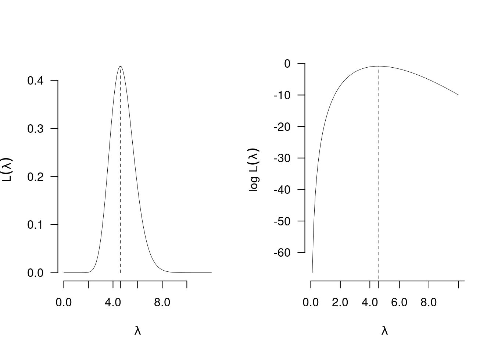
12.8.5 Esempio \(n=50\)
Il numero di clienti del negozio \(A\) è distribuito come una Poisson di parametro \(\lambda\) incognito. Dopo \(n=50\) giorni di osservazione si è osservata una media di ingressi pari a ingressi \((4.6)\). La stima \(\hat\lambda\) di \(\lambda\) è \[\hat\lambda=4.6\]
Lo Standard Error stimato \[\widehat{SE(\hat\lambda)}=\sqrt{\frac {4.6} {50}}=0.3033\]
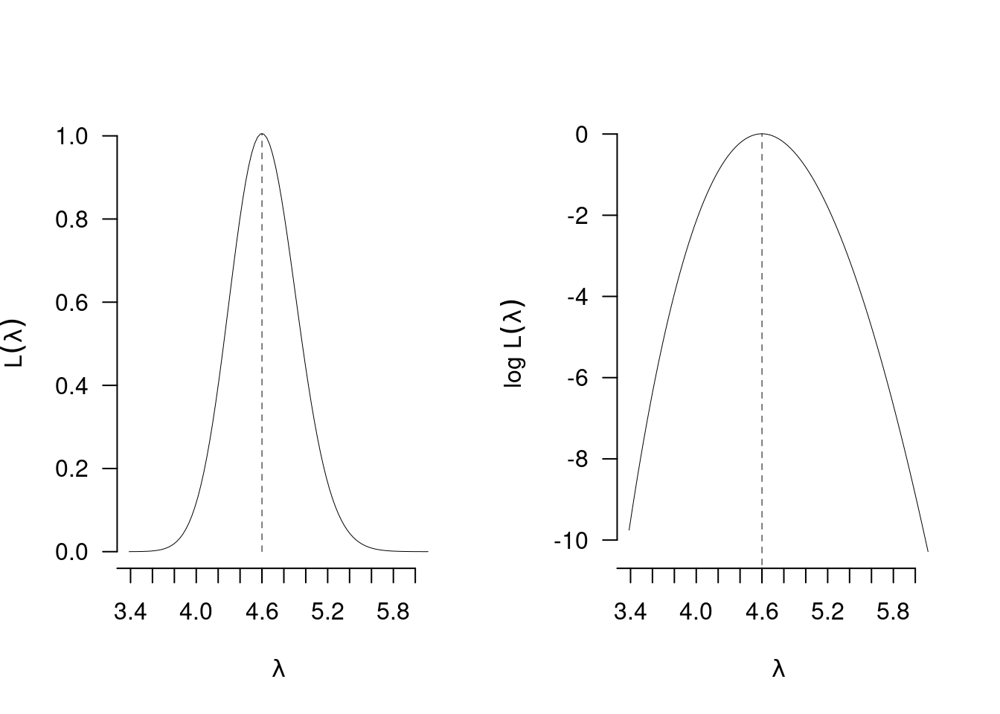
12.9 Il modello Normale
Siano \(X_1,...,X_n\) \(n\) VC IID, replicazioni della stessa \(X\sim N(\mu,\sigma^2)\), e dunque con funzione di probabilità: \[f(x_i;\mu,\sigma^2)\]
La verosimiglianza per \((\mu,\sigma^2)\) è \[\begin{eqnarray*} L(\lambda) &=& \prod_{i=1}^n f(x_i;\mu,\sigma^2) \end{eqnarray*}\]
La log-verosimiglianza della Normale
Allora \[\begin{eqnarray*} \ell(\mu,\sigma^2) &=& \log \prod_{i=1}^n f(x_i;\mu,\sigma^2)\\ &=& \sum_{i=1}^n \log f(x_i;\mu,\sigma^2) \end{eqnarray*}\]
12.9.2 Le stime di massima verosimiglianza della Normale
Per ottenere \(\hat\mu\) e \(\hat\sigma^2\) bisogna eguagliare a zero il sistema di equazioni di derivate di \(\ell(\mu,\sigma^2)\) rispetto a \(\mu\) e \(\sigma^2\) \[ \begin{cases} \frac{d\ell(\mu,\sigma^2)}{d\mu}=0\\ \frac{d\ell(\mu,\sigma^2)}{d\sigma^2}=0 \end{cases} \]
Proprietà 12.1 \[\begin{eqnarray*} \hat\mu &=& \frac 1 n \sum_{i=1}^n x_i\\ \hat\sigma^2 &=& \frac 1 n \sum_{i=1}^n(x_i-\hat\mu)^2\\ &=& \frac 1 n \sum_{i=1}^n x_i^2 -\hat\mu^2 \end{eqnarray*}\]
Tutta l’informazione del campione è contenuta nelle statistiche \(\sum_{i=1}^n x_i\) e \(\sum_{i=1}^n x_i^2\).
Dimostrazione. \[\begin{eqnarray*} L(\mu,\sigma^2;\,\mathbf{x}) &=& \prod_{i=1}^n \frac{1}{\sqrt{2\pi\sigma^2}}e^ {-\frac 12\left(\frac{(x_i-\mu)^2}{\sigma^2}\right)}\\ &=&\left(\frac{1}{\sqrt{2\pi\sigma^2}}\right)^n e^{-\frac 1{2\sigma^2}((x_1-\mu)^2+(x_2-\mu)^2+...+(x_n-\mu)^2)}\\ &\propto& \sigma^{-2n}\exp\left\{-\frac 1{2\sigma^2}\sum_{i=1}^n(x_i-\mu)^2\right\}\\ \end{eqnarray*}\] \[\begin{eqnarray*} \ell(\mu,\sigma^2) &=& \log L(\mu,\sigma^2;\,\mathbf{x})\\ &=& \log \sigma^{-2n}\exp\left\{-\frac 1{2\sigma^2}\sum_{i=1}^n(x_i-\mu)^2\right\}\\ &=& -n \log \sigma^2-\frac 1{2\sigma^2}\sum_{i=1}^n(x_i-\mu)^2\\ \end{eqnarray*}\] \[\begin{eqnarray*} \frac{d\ell(\mu,\sigma^2)}{d\mu} &=& +\frac 2{2\sigma^2}\sum_{i=1}^n(x_i-\mu)\\ \frac{d\ell(\mu,\sigma^2)}{d\sigma^2} &=& -\frac n{\sigma^2}+\frac 1{(\sigma^2)^2}\sum_{i=1}^n(x_i-\mu)^2\\ &=& \frac{-n\sigma^2+\sum_{i=1}^n(x_i-\mu)}{(\sigma^2)^2}\\ \frac{d\ell(\mu,\sigma^2)}{d\mu} &=& 0 \Rightarrow \hat\mu=\frac 1n \sum_{i=1}^nx_i\\ \frac{d\ell(\mu,\sigma^2)}{d\sigma^2} &=& 0 \Rightarrow \hat\sigma^2=\frac 1 n \sum_{i=1}^n(x_i-\hat\mu)^2 \end{eqnarray*}\]
12.9.3 Proprietà di \(\hat\mu\)
Correttezza per \(\mu\): \[ E(\hat\mu) = E\left(\frac{1}n\sum_{i=1}^n X_i\right) = \frac 1 n \sum_{i=1}^n E(X_i) = \frac 1 n \sum_{i=1}^n \mu = \mu \]
Mean Squared Error per \(\mu\): \[ MSE(\hat\mu) = V(\hat\mu) = V\left(\frac 1 n \sum_{i=1}^n X_i\right) = \frac 1 {n^2} \sum_{i=1}^n V(X_i) = \frac n {n^2} \sigma^2 = \frac {\sigma^2}n \]
Consistenza per \(\mu\): \[ \lim_{n\to+\infty} MSE(\hat\mu) = \lim_{n\to+\infty} \frac {\sigma^2}n = 0 \]
E lo Standard Error: \[SE(\hat\mu)=\sqrt{\frac {\sigma^2}n}\]
Standard Error stimato tra poco verrà ricavato 12.9.5.
12.9.4 Proprietà di \(\hat\sigma^2\)
Correttezza per \(\hat\sigma^2\): \[ E(\hat\sigma^2) = \frac {n-1}{n}\sigma^2 \] \(\hat\sigma^2\) non è stimatore corretto per \(\sigma^2\).
Correzione di \(\hat\sigma^2\) \[ S^2=\frac{n}{n-1}\hat\sigma^2=\frac{n}{n-1}\frac{1}n\sum_{i=1}^n(X_i-\hat\mu)^2=\frac{1}{n-1}\sum_{i=1}^n(X_i-\hat\mu)^2 \]
Osserviamo che \[ E(S^2)=E\left(\frac{n}{n-1}\hat\sigma^2\right)=\frac{n}{n-1}E\left(\hat\sigma^2\right)= \frac{n}{n-1}\frac {n-1}{n}\sigma^2=\sigma^2 \]
\(S^2\) è stimatore corretto per \(\sigma^2\).
12.9.5 Lo \(SE\) di \(\hat\mu\)
Standard Error \[SE(\hat\mu)=\sqrt{\frac {\sigma^2}n}\]
Standard Error stimato. \[\widehat{SE(\hat\mu)}=\sqrt{\frac {S^2}n}=\sqrt{\frac {\hat\sigma^2}{n-1}}\]
In quanto \[\frac {S^2}{n}=\frac 1 nS^2=\frac 1 n \frac{n}{n-1}\hat\sigma^2=\frac{\hat\sigma^2}{n-1}\]
12.9.6 Esempio \(n=10\)
Il fatturato mensile del negozio \(A\) è distribuito come una Normale di parametri \(\mu\) e \(\sigma^2\) incogniti. Dopo \(n=10\) mesi di osservazione si sono osservati i seguenti fatturati \(\small (x_{1}=2.103, x_{2}=3.185, x_{3}=4.588, x_{4}=1.87, x_{5}=2.92, x_{6}=3.132, x_{7}=3.708, x_{8}=2.76, x_{9}=4.984, x_{10}=2.861)\). La stima \(\hat\mu\) di \(\mu\) è \[\hat\mu=\frac 1 {10}32.1115=3.2112\]
La varianza campionaria \(\hat\sigma^2\) \[\hat\sigma^2=\frac 1 n \sum_{i=1}^n(x_i-\hat\mu)^2=\frac 1 n \sum_{i=1}^n x_i^2-\hat\mu^2=\frac{111.8468}{10}-3.2112^2=0.8732\]
\(S^2\) la stima corretta di \(\sigma^2\) \[S^2=\frac{n}{n-1}\hat\sigma^2=\frac{10}{9}0.8732=0.9702\]
Lo \(SE\) stimato di \(\hat\mu\) \[\widehat{SE(\hat\mu)} = \sqrt{\frac{0.9702}{10}} = 0.3115\]
12.9.7 Esempio \(n=100\)
L’ammontare delle transazioni finanziarie compiute al minuto dal server \(A\) è distribuito come una Normale di parametri \(\mu\) e \(\sigma^2\) incogniti. Dopo \(n=100\) ore di osservazione si sono osservati \(\bar x=3.2112\), \(\hat\sigma=0.9344\) . La stima \(\hat\mu\) di \(\mu\) è \[\hat\mu=3.2112\]
La varianza campionaria \(\hat\sigma^2\) \[\hat\sigma^2=0.9344^2=0.8732\]
\(S^2\) la stima corretta di \(\sigma^2\) \[S^2=\frac{n}{n-1}\hat\sigma^2=\frac{100}{99}0.8732=0.882\]
Lo \(SE\) stimato di \(\hat\mu\) \[\widehat{SE(\hat\mu)} = \sqrt{\frac{0.882}{100}} = 0.0939\]
12.9.8 Perché \(n-1\)
Per calcolare la varianza campionaria dobbiamo prima calcolare la media dei dati. Per calcolare la media bisogna sommare i dati, per esempio se \(n=3\): \(x_1=7\), \(x_2=8\) e \(x_3=11\) \[x_1+x_2+x_3 = 26\]
Ma \(x_1=7\), \(x_2=8\) e \(x_3=11\) non sono l’unica tripla di \(x\) che somma a 26, ma \(n-1=2\) valori possono essere scelti liberamente (es \(x_1=5\) e \(x_2=15\)): Il terzo è vincolato: \[x_3=26-x_1-x_2\]
Fissata la somma il sistema ha perso un grado di libertà.
12.10 Proprietà degli stimatori di massima verosimiglianza
Proprietà 12.2 (Stimatori di massima verosimgilianza) Siano \(X_1,...,X_n\) \(n\) VC IID, replicazioni di \(X\sim \mathscr{L}(\theta)\) e sia \(\hat\theta\) lo stimatore di massima verosimiglianza per per \(\theta\), allora
\(\hat\theta\) non è sempre stimatore corretto ma è sempre corretto asintoticamente: \[E(\hat\theta)\xrightarrow{n\to\infty}\theta\]
\(\hat\theta\) non è sempre stimatore a massima efficienza ma lo è sempre asintoticamente: \[V(\hat\theta)\xrightarrow{n\to\infty}I^{-1}(\theta)\] dove \(I(\theta)\) è l’infromazione di Fisher.
\(\hat\theta\) è asintoticamente distribuito normalmente \[\hat\theta\operatorname*{\sim}_a N(\theta,I^{-1}(\theta))\]
Lo stimatore di massima verosimiglianza è invariante alle trasformazioni monotone invertibili \(g\):
\[ \text{se } \psi=g(\theta), \text{ allora } \hat\psi = g(\hat\psi)\]
- La proprietà uno riguarda la correttezza. Non sempre gli SMV sono corretti ma lo sono sempre asintoticamente. Esempio: lo stimatore \(\hat\sigma^2\) di \(\sigma^2\) non è corretto solo asintoticamente \[E(\hat\sigma^2)=\frac{n-1}{n}\sigma^2\xrightarrow{n\to\infty}\sigma^2\]
- La proprietà due riguarda l’efficienza dello stimatore: non sempre lo SMV è il più efficiente per piccoli campioni, ma se il campione diventa grande, lo SMV è lo stimatore che raggiunge la varianza minima. La varianza minima è chiamata Informazione di Fisher ed è indicata con \(I^{-1}(\theta)\): \[ I(\theta)=-E\left(\ell''(\theta)\right) \] dove \(\ell''(\theta)\) è la derivata seconda della log verosimiglianza calcolata in \(\theta\).
- \(I(\theta)\) è la curvatura media della log verosimiglianza intorno al punto \(\theta\).
- \(I^{-1}(\theta)\) è un risultato teorico ed un limite sotto al quale nessuno stimatore può scendere.
- Se esiste lo stimatore più efficiente allora è quello di massima verosimiglianza.
- Esempio: \(\hat\pi\), \(\hat\lambda\) e \(\hat\mu\) sono stimatori a efficienza massima.
\[\begin{eqnarray*} I^{-1}(\pi) &=& \frac{\pi(1-\pi)}{n}\\ I^{-1}(\lambda) &=& \frac{\lambda}{n}\\ I^{-1}(\mu) &=& \frac{\sigma^2}{n} \end{eqnarray*}\]
- La proprietà tre ci garantisce che, per \(n\) sufficientemente alto, sappiamo la distribuzione degli SMV
- Esempio: lo stimatore \(\hat\pi\) di \(\pi\), dal TLC \[\hat\pi\operatorname*{\sim}_a N\left(\pi,\frac{\pi(1-\pi)}{n}\right)\]
- Esempio: lo stimatore \(\hat\lambda\) di \(\lambda\), dal TLC \[\hat\lambda\operatorname*{\sim}_a N\left(\lambda,\frac{\lambda}{n}\right)\]
- La proprietà 4 garantisce che trasformazioni invertibili dei parametri non richiedono di ricalcolare la SMV.
- Esempio: \(\sigma=\sqrt{\sigma^2}\) e dunque \(\hat\sigma=\sqrt{\hat\sigma^2}\)